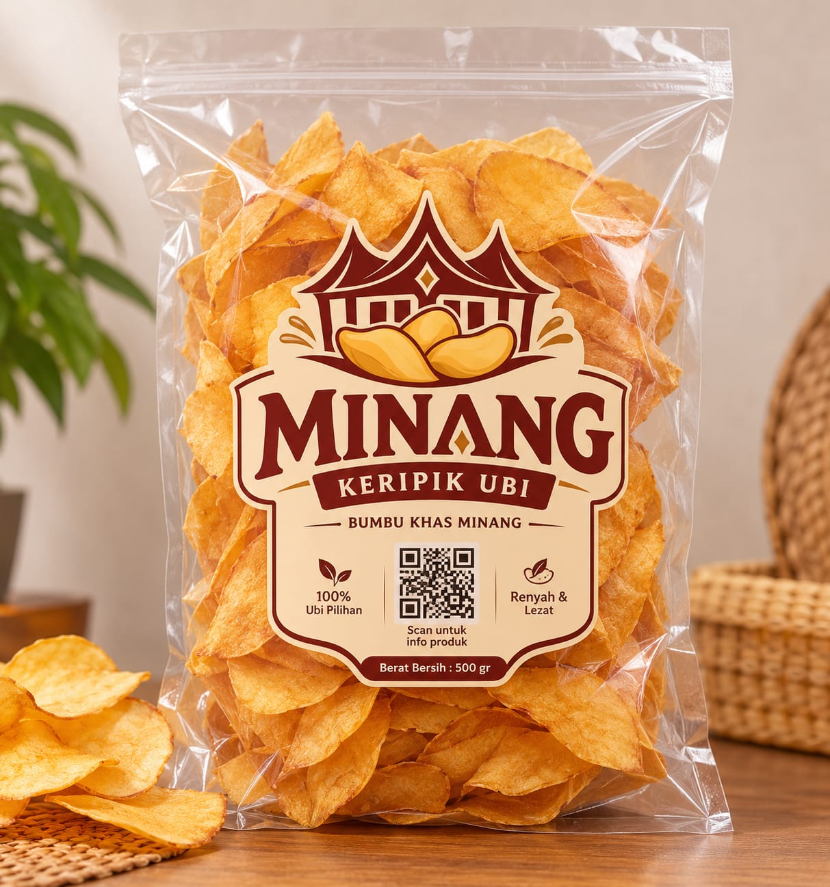
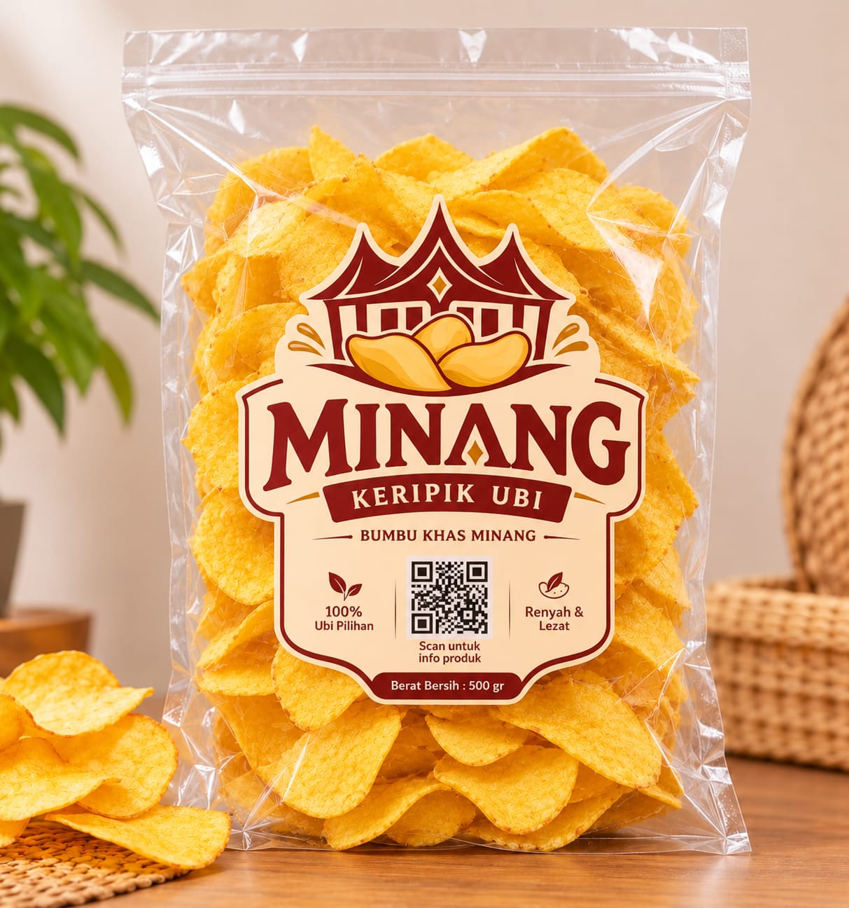

Pilihan camilan
Jelajahi katalog produk
Temukan beragam pilihan keripik dan oleh-oleh untuk menemani setiap momen istimewa.
Produk pilihan
Beragam pilihan camilan lezat untuk dinikmati bersama keluarga.

CONTOH
❋
KERIPIK PISANG
Camilan manis
Keripik Pisang
Deskripsi contoh. Pastikan jenis produk ini benar-benar dijual sebelum dipublikasikan.
Harga belum tersedia
Tanya toko ↗
CONTOH
✹
KERIPIK BALADO
Camilan berbumbu
Keripik Balado
Deskripsi contoh. Tambahkan tingkat pedas, ukuran kemasan, dan harga setelah konfirmasi.
Harga belum tersedia
Tanya toko ↗
Produk tidak ditemukan. Coba kata kunci lain.